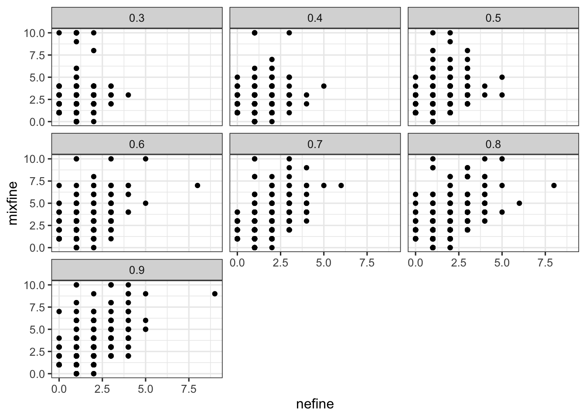
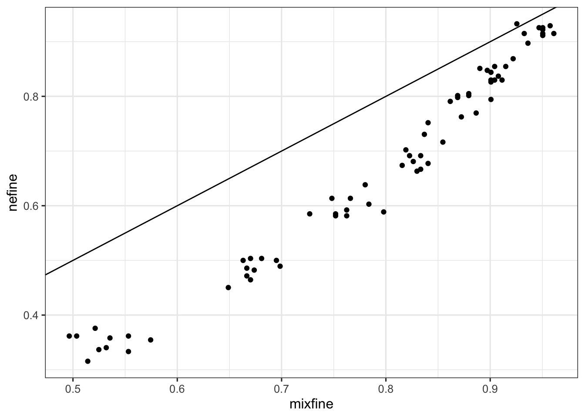
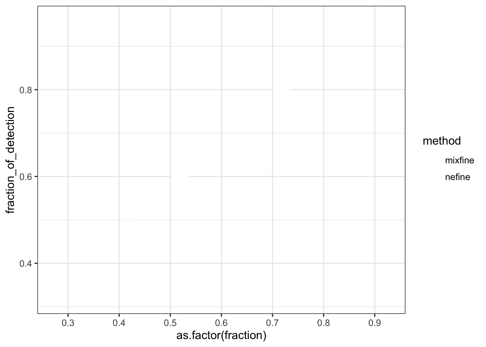
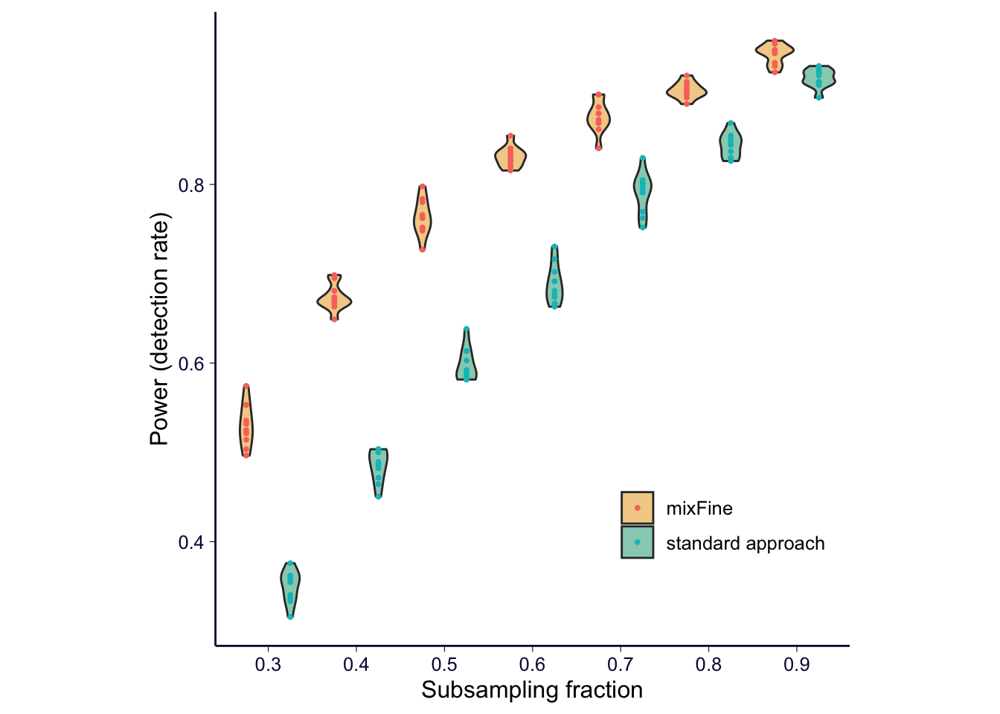
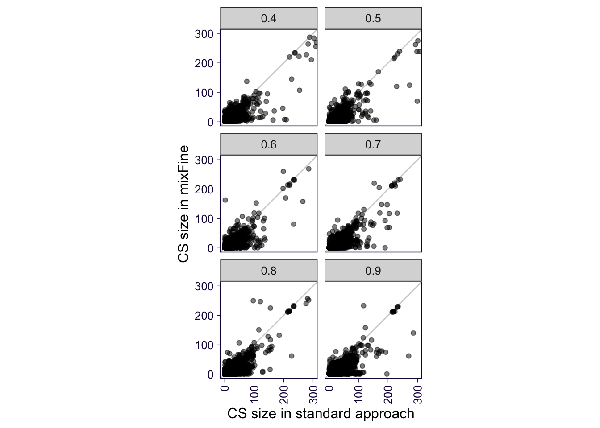
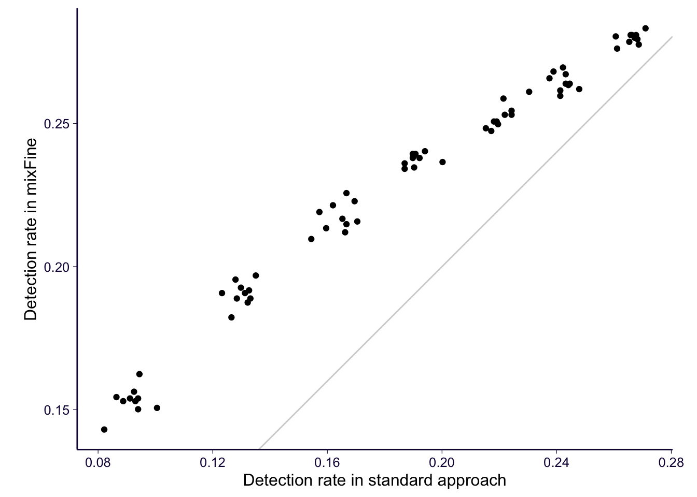
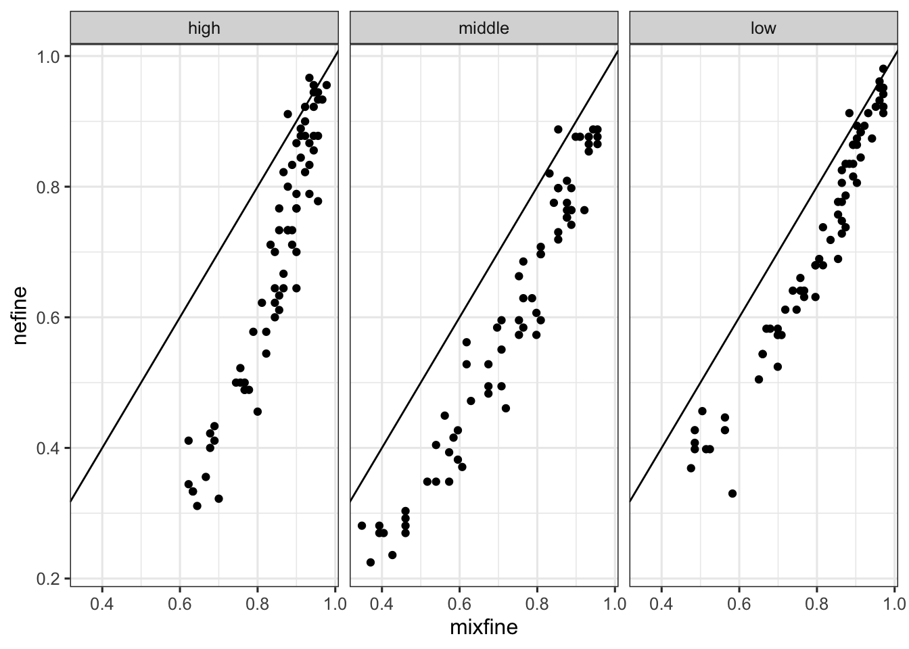
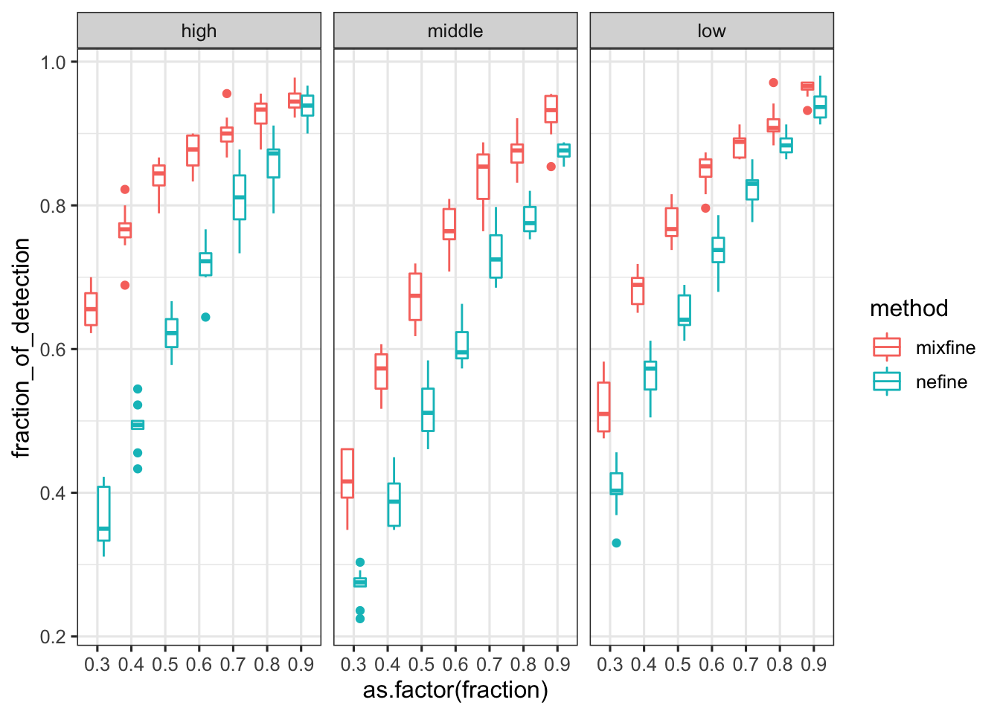
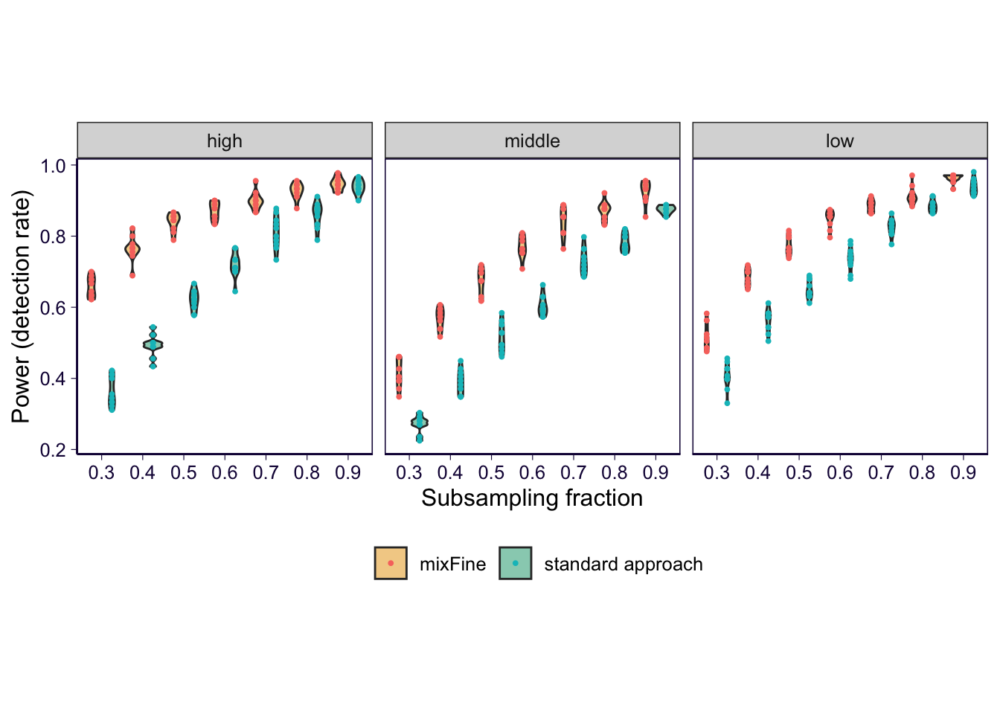

rm(list = ls())
library(ggplot2)
theme_set(theme_bw(base_size = 12))
library(dplyr)
library(reshape2)
library(stringr)
library(data.table)
options(datatable.fread.datatable = FALSE)
options(stringsAsFactors = FALSE)
source('../code/rlib_analysis.R')
datadir = '/Users/yanyul/Desktop/mixqtl-pipeline-results/' # gtex_v8-results/
cbPalette <- c('ascQTL' = "#999999", 'mixFine' = "#E69F00", 'trcQTL' = "#56B4E9", 'vanilla' = "#009E73", 'standard approach' = "#009E73", "#F0E442", "#0072B2", "#D55E00", "#CC79A7")
source('https://gist.githubusercontent.com/liangyy/43912b3ecab5d10c89f9d4b2669871c9/raw/8151c6fe70e3d4ee43d9ce340ecc0eb65172e616/my_ggplot_theme.R')
# th0 = th
# th$panel.border = element_rect(colour = th$axis.line$colour)
parse_name = function(ee) {
ee = basename(ee)
b = as.numeric(str_remove(str_extract(ee, 'batch([0-9]+)'), 'batch'))
f = as.numeric(str_remove(str_extract(ee, 'fraction([0-9\\.]+)'), 'fraction'))
cc = str_remove(str_extract(ee, 'result_([a-z]+)'), 'result_')
mm = str_remove(str_extract(ee, paste0('result_', cc, '-[a-z]+')), paste0('result_', cc, '-'))
return(list(batch = b, fraction = f, type = cc, method = mm))
}
expression_level = read.table('~/Desktop/mixqtl-pipeline-results/misc_data/gtex-v8-genes-passed-qc-with-median-trc.txt', header = T, stringsAsFactors = F)method_df = data.frame(method = c('mixfine', 'nefine'), tag = c('mixFine', 'standard approach'))
fractions = 3 : 9 / 10
batch = 1 : 10
# load results from full data
df_full = list()
df_full_g = list()
for(m in 1 : nrow(method_df)) {
method = method_df$method[m]
tag = method_df$tag[m]
d = readRDS(paste0(datadir, 'mixfine/Whole_Blood/pack/GTExV8_WholeBlood__result_pip-', method, '.rds'))
df_full[[length(df_full) + 1]] = d$pip %>% mutate(method = method, batch = NA, fraction = 1)
df_full_g[[length(df_full_g) + 1]] = data.frame(gene = d$gene, method = method, batch = NA, fraction = 1)
}
df_full = do.call(rbind, df_full)
df_full_g = do.call(rbind, df_full_g)
# load results from full data
list_pip = list()
list_g = list()
for(m in 1 : nrow(method_df)) {
method = method_df$method[m]
tag = method_df$tag[m]
for(frac in fractions) {
for(bat in batch) {
e = Sys.glob(paste0(datadir, 'mixfine-subsample/gene_list_whole_blood_for_subsampling_with_qc0*/Whole_Blood/pack/mypack-08-10-20__indiv_subset-indiv_subset__fraction', frac, '__batch', bat, '-result_pip-', method, '.rds'))
for(ee in e) {
d = readRDS(ee)
list_pip[[length(list_pip) + 1]] = d$pip %>% mutate(method = method, batch = bat, fraction = frac)
list_g[[length(list_g) + 1]] = data.frame(gene = d$gene, method = method, batch = bat, fraction = frac)
}
}
}
}
df_subsample = do.call(rbind, list_pip)
df_subsample_g = do.call(rbind, list_g)
#
df_subsample_g_complete = df_subsample_g %>% group_by(method, gene) %>% summarize(n_success = n()) %>% ungroup() %>% filter(n_success == 10 * 7) %>% group_by(gene) %>% summarize(n_method = n()) %>% ungroup() %>% filter(n_method == 2)## `summarise()` regrouping output by 'method' (override with `.groups` argument)## `summarise()` ungrouping output (override with `.groups` argument)df_full_g_complete = df_full_g %>% group_by(gene) %>% summarize(n_success = n()) %>% ungroup() %>% filter(n_success == 2)## `summarise()` ungrouping output (override with `.groups` argument)gene_complete_all = df_subsample_g_complete %>% filter(gene %in% df_full_g_complete$gene)
# extract the genes with complete results (no failed runs)
df_subsample_complete = df_subsample %>% filter(gene %in% gene_complete_all$gene)
df_full_complete = df_full %>% filter(gene %in% gene_complete_all$gene)
df_both_complete = rbind(df_full_complete, df_subsample_complete)
# # filter out low asc genes
# df_subsample_complete = df_subsample_complete %>% filter(gene %in% expression_level$gene[expression_level$n_good_asc > 30 / 3 * 10])
# df_full_complete = df_full_complete %>% filter(gene %in% expression_level$gene[expression_level$n_good_asc > 30 / 3 * 10])
# df_both_complete = df_both_complete %>% filter(gene %in% expression_level$gene[expression_level$n_good_asc > 30 / 3 * 10]) ncs_total = df_subsample_complete %>% group_by(gene, method, fraction) %>% summarize(ncs = length(unique(cs))) %>% ungroup()## `summarise()` regrouping output by 'gene', 'method' (override with `.groups` argument)g = ncs_total %>% dcast(fraction + gene ~ method, value.var = 'ncs', fill = 0)## Warning in dcast(., fraction + gene ~ method, value.var = "ncs", fill = 0): The dcast generic in data.table has been passed a
## tbl_df and will attempt to redirect to the reshape2::dcast; please note that reshape2 is deprecated, and this redirection is now
## deprecated as well. Please do this redirection yourself like reshape2::dcast(.). In the next version, this warning will become an
## error.g %>% ggplot() + geom_point(aes(x = nefine, y = mixfine)) + facet_wrap(~fraction)
# extract variant-gene pairs with PIP > 0.5 from full set in both mixfine and nefine
# plot the fraction of them identified in sub sampled sets
consensus_eqtl = df_full_complete %>% filter(variable_prob > 0.5) %>% group_by(variant_id, gene) %>% summarize(n_method = n()) %>% ungroup() %>% filter(n_method == 2)## `summarise()` regrouping output by 'variant_id' (override with `.groups` argument)df_subsample_with_consensus = df_subsample_complete %>% filter(variable_prob > 0) %>% mutate(is_consensus = paste(variant_id, gene) %in% paste(consensus_eqtl$variant_id, consensus_eqtl$gene))
df_subsample_with_consensus_summary = df_subsample_with_consensus %>% group_by(method, fraction, batch) %>% summarize(fraction_of_detection = sum(is_consensus) / nrow(consensus_eqtl))## `summarise()` regrouping output by 'method', 'fraction' (override with `.groups` argument)df_subsample_with_consensus_summary_flat = df_subsample_with_consensus_summary %>% dcast(fraction + batch ~ method, value.var = 'fraction_of_detection')## Warning in dcast(., fraction + batch ~ method, value.var = "fraction_of_detection"): The dcast generic in data.table has been
## passed a grouped_df and will attempt to redirect to the reshape2::dcast; please note that reshape2 is deprecated, and this
## redirection is now deprecated as well. Please do this redirection yourself like reshape2::dcast(.). In the next version, this
## warning will become an error.df_subsample_with_consensus_summary_flat %>% ggplot() + geom_point(aes(x = mixfine, y = nefine)) + geom_abline(slope = 1, intercept = 0)
df_subsample_with_consensus_summary %>% ggplot() + geom_boxplot(aes(x = as.factor(fraction), y = fraction_of_detection, color = method)) + scale_color_manual(values = cbPalette)
# for saving a nice plot
temp = df_subsample_with_consensus_summary
temp$method[temp$method == 'mixfine'] = 'mixFine'
temp$method[temp$method == 'nefine'] = 'standard approach'
p = temp %>% ggplot() + geom_violin(aes(x = as.factor(fraction), y = fraction_of_detection, fill = method), alpha = .5, position = position_dodge(1)) +
# geom_boxplot(aes(x = as.factor(fraction), y = fraction_of_detection, fill = method), alpha = 1, width = .2, position = position_dodge(1)) +
scale_fill_manual(values = cbPalette) + xlab('Subsampling fraction') + ylab('Power (detection rate)') + theme(legend.position = c(0.8, 0.2), legend.title = element_blank()) + geom_jitter(aes(x = as.factor(fraction), y = fraction_of_detection, color = method), position = position_dodge(1), size = 0.7, alpha = 1) # + ggtitle('Consensus variants \n (PIP > 0.5 in both) \n being detected')
p = p + th + theme(aspect.ratio = 1)
p
ggsave('../output/gtex-v8-pipeline-eqtl-finemapping-concensus-snp-with-gene-qc.png', p, height = 4, width = 4)
ggsave('../output/gtex-v8-pipeline-eqtl-finemapping-concensus-snp-with-gene-qc.pdf', p, height = 4, width = 4)# get variants in Consensus CS's (sharing the same variant)
sub = df_full %>% filter(cs > 0) %>% group_by(gene, variant_id) %>% summarize(nmethod = length(unique(method))) %>% ungroup() %>% filter(nmethod > 1)## `summarise()` regrouping output by 'gene' (override with `.groups` argument)# get Consensus top variant of Consensus CS
sub2 = df_full %>% filter(paste(gene, variant_id) %in% paste(sub$gene, sub$variant_id))
sub2 = sub2 %>% group_by(gene, method, cs) %>% summarize(top_var = variant_id[which.max(variable_prob)])## `summarise()` regrouping output by 'gene', 'method' (override with `.groups` argument)sub2 = sub2 %>% group_by(gene, top_var) %>% summarize(n = n()) %>% ungroup() %>% filter(n == 2)## `summarise()` regrouping output by 'gene' (override with `.groups` argument)# get cs size in subsample
sub_cs_size_sub = df_subsample %>% group_by(gene, cs, method, fraction, batch) %>% summarize(cs_size = n())## `summarise()` regrouping output by 'gene', 'cs', 'method', 'fraction' (override with `.groups` argument)# get cs with top variant in subsample
sub_cs = df_subsample %>% filter(paste(gene, variant_id) %in% paste(sub2$gene, sub2$top_var))
# annotate extracted cs with cs size
sub_cs = left_join(sub_cs, sub_cs_size_sub, by = c('gene', 'cs', 'batch', 'fraction', 'method'))
# flat to compare mixfine vs nefine
sub_flat = sub_cs %>% dcast(gene + variant_id + batch + fraction ~ method, value.var = 'cs_size')## Warning in dcast(., gene + variant_id + batch + fraction ~ method, value.var = "cs_size"): The dcast generic in data.table has
## been passed a data.frame and will attempt to redirect to the reshape2::dcast; please note that reshape2 is deprecated, and this
## redirection is now deprecated as well. Please do this redirection yourself like reshape2::dcast(.). In the next version, this
## warning will become an error.# plot: for cs's detected in both mixfine and nefine
th2 = th
th2$panel.border = element_rect(colour = th2$axis.line$colour)
p = sub_flat %>% filter(!is.na(mixfine), !is.na(nefine)) %>% filter(fraction != 0.3) %>% ggplot(aes(y = mixfine, x = nefine)) + geom_abline(slope = 1, intercept = 0, color = 'lightgray') + geom_point(alpha = .5) + facet_wrap(~fraction, ncol = 2) + ylab('CS size in mixFine') + xlab('CS size in standard approach') + coord_equal(xlim = c(0, 300), y = c(0, 300)) # + ggtitle('Size of Consensus CS \n being detected in both')
p = p + theme(axis.text.x = element_text(angle = 90, hjust = 1, vjust = .5)) # + coord_cartesian(xlim = c(0, 300), y = c(0, 300))
p = p + th2
p
ggsave('../output/gtex-v8-pipeline-eqtl-finemapping-cs-size-gene-qc.png', p, height = 5, width = 4)
# plot: counting how many cs's are detected
sub_sum = sub_cs %>% group_by(method, fraction, batch) %>% summarize(ntimes_detected = n()) ## `summarise()` regrouping output by 'method', 'fraction' (override with `.groups` argument)sub_sum_flat = sub_sum %>% dcast(fraction + batch ~ method, value.var = 'ntimes_detected')## Warning in dcast(., fraction + batch ~ method, value.var = "ntimes_detected"): The dcast generic in data.table has been passed a
## grouped_df and will attempt to redirect to the reshape2::dcast; please note that reshape2 is deprecated, and this redirection is
## now deprecated as well. Please do this redirection yourself like reshape2::dcast(.). In the next version, this warning will become
## an error.p = sub_sum_flat %>% ggplot() + geom_abline(slope = 1, intercept = 0, color = 'lightgray') + geom_point(aes(y = mixfine / nrow(sub2), x = nefine / nrow(sub2))) + ylab('Detection rate in mixFine') + xlab('Detection rate in standard approach') + coord_equal() # + ggtitle('Consensus CS \n (CS with same top variant) \n being detected')
p = p + th
p
ggsave('../output/gtex-v8-pipeline-eqtl-finemapping-concensus-cs-gene-qc.png', p, height = 4, width = 4)
sub_flat %>% filter(!is.na(mixfine), !is.na(nefine)) %>% summarize(mean_mixfine = mean(mixfine, na.rm = T), mean_nefine = mean(nefine, na.rm = T))## mean_mixfine mean_nefine
## 1 9.491445 14.56412cutoffs = quantile(expression_level$median_trc, probs = c(1/3, 2/3))
# df_subsample_with_consensus$median_trc = expression_level$median_trc[match(df_subsample_with_consensus$gene, expression_level$gene)]
df_subsample_with_consensus = df_subsample_complete %>% mutate(is_consensus = paste(variant_id, gene) %in% paste(consensus_eqtl$variant_id, consensus_eqtl$gene))
df_subsample_with_consensus$expression_level = 'high'
df_subsample_with_consensus$expression_level[df_subsample_with_consensus$gene %in% expression_level$gene[expression_level$median_trc < cutoffs[1]]] = 'low'
df_subsample_with_consensus$expression_level[df_subsample_with_consensus$gene %in% expression_level$gene[expression_level$median_trc < cutoffs[2] & expression_level$median_trc >= cutoffs[1]]] = 'middle'
# consensus_eqtl$median_trc = expression_level$median_trc[match(consensus_eqtl$gene, expression_level$gene)]
consensus_eqtl$expression_level = 'high'
consensus_eqtl$expression_level[consensus_eqtl$gene %in% expression_level$gene[expression_level$median_trc < cutoffs[1]]] = 'low'
consensus_eqtl$expression_level[consensus_eqtl$gene %in% expression_level$gene[expression_level$median_trc < cutoffs[2] & expression_level$median_trc >= cutoffs[1]]] = 'middle'
n_consensus_eqtl = consensus_eqtl %>% group_by(expression_level) %>% summarize(n = n()) %>% ungroup()## `summarise()` ungrouping output (override with `.groups` argument)df_subsample_with_consensus_summary = df_subsample_with_consensus %>% group_by(method, fraction, batch, expression_level) %>% summarize(num_of_detection = sum(is_consensus))## `summarise()` regrouping output by 'method', 'fraction', 'batch' (override with `.groups` argument)df_subsample_with_consensus_summary = inner_join(df_subsample_with_consensus_summary, n_consensus_eqtl, by = 'expression_level')
df_subsample_with_consensus_summary = df_subsample_with_consensus_summary %>% mutate(fraction_of_detection = num_of_detection / n)
df_subsample_with_consensus_summary$expression_level = factor(df_subsample_with_consensus_summary$expression_level, levels = c('high', 'middle', 'low'))
df_subsample_with_consensus_summary_flat = df_subsample_with_consensus_summary %>% dcast(fraction + batch + expression_level ~ method, value.var = 'fraction_of_detection')## Warning in dcast(., fraction + batch + expression_level ~ method, value.var = "fraction_of_detection"): The dcast generic
## in data.table has been passed a grouped_df and will attempt to redirect to the reshape2::dcast; please note that reshape2 is
## deprecated, and this redirection is now deprecated as well. Please do this redirection yourself like reshape2::dcast(.). In the
## next version, this warning will become an error.df_subsample_with_consensus_summary_flat %>% ggplot() + geom_point(aes(x = mixfine, y = nefine)) + geom_abline(slope = 1, intercept = 0) + facet_wrap(~expression_level)
df_subsample_with_consensus_summary %>% ggplot() + geom_boxplot(aes(x = as.factor(fraction), y = fraction_of_detection, color = method)) + facet_wrap(~expression_level) # + scale_color_manual(values = cbPalette)
# for saving a nice plot
temp = df_subsample_with_consensus_summary
temp$method[temp$method == 'mixfine'] = 'mixFine'
temp$method[temp$method == 'nefine'] = 'standard approach'
p = temp %>% ggplot() + geom_violin(aes(x = as.factor(fraction), y = fraction_of_detection, fill = method), alpha = .5, position = position_dodge(1)) +
# geom_boxplot(aes(x = as.factor(fraction), y = fraction_of_detection, fill = method), alpha = 1, width = .2, position = position_dodge(1)) +
scale_fill_manual(values = cbPalette) + xlab('Subsampling fraction') + ylab('Power (detection rate)') + theme(legend.position = 'bottom', legend.title = element_blank()) + facet_wrap(~expression_level) + geom_point(aes(x = as.factor(fraction), y = fraction_of_detection, color = method), position = position_dodge(1), size = 0.7, alpha = 1) # + ggtitle('Consensus variants \n (PIP > 0.5 in both) \n being detected')
p = p + th2 + theme(aspect.ratio = 1)
p
ggsave('../output/gtex-v8-pipeline-eqtl-finemapping-concensus-snp-with-gene-qc-stratified.png', p, height = 4, width = 8)